이 자료는 Legend of Zelda scores 단원에 올라온 악보(score) 자료다. 게임 The Legend Of Zelda에 나오는 음악을 연주할 수 있게 정리해 둔 것이다. 음악 수업에서 직접 연주하거나 분석할 때 쓰는 자료다.
자료 종류는 book으로 표시돼 있다. 즉 낱장 프린트가 아니라 여러 곡이 묶인 악보집 형태다. 어느 곡을 연습할지 선생님이 지정해 주면 그 부분을 찾아 보면 된다.
올라온 시점은 Posted Yesterday, 곧 어제 올라온 새 자료다. more_vert(점 세 개)는 More options, 즉 다운로드 같은 추가 메뉴를 여는 버튼이다.
이 자료는 Chef Chop이라는 AI 리듬 튜터(AI rhythm tutor)를 학생에게 처음 소개하는 글이다. 단원 이름이 'Meet Chef Chop'인 것에서 알 수 있듯, 앞으로 리듬을 배울 때 도와줄 대상을 만나 보는 시작 자료다. 요리사(chef)와 자르다(chop)를 붙인 이름이라 리듬을 잘게 나누는 것과 연결된 별명으로 보인다.
제목에 붙은 THE RHYTHM PREP COOK은 '리듬 준비 요리사'라는 뜻이다. 요리에서 재료를 미리 손질해 두는 사람을 prep cook이라 부르는데, 그 비유를 리듬 공부에 가져다 쓴 이름이다.
자료 형태는 Material(수업 자료)이며 게시 시각은 오전 11시 16분으로 표시되어 있다. 이 자료에서 확인되는 글자는 제목과 안내 문구뿐이라, 실제 학습 내용은 자료를 직접 열어 확인해야 한다.
이 항목은 1 Bentley Test - Pitch 단원의 과제(assignment)이며, 8월 18일에 올라왔고 마감(Due)도 8월 18일로 되어 있다. 상태가 Missing으로 표시되어 있는데, 이는 아직 제출하지 않았다는 뜻이다.
자료 본체는 공부할 내용이 담긴 문서가 아니라 구글 폼(Google Forms) 주소다. 링크를 열면 로그인(Sign-in) 화면이 먼저 나오므로, 학교 계정으로 로그인해야 폼 내용이 열린다. 폼을 끝까지 작성해 제출하는 것이 이 과제를 하는 방법이다.
과제 화면에 View instructions(설명 보기)가 있으므로, 폼을 열기 전에 선생님이 적어둔 안내를 먼저 읽는 것이 좋다. 무엇을 써야 하는지가 거기에 적혀 있다.
이 자료는 2 Bentley Test - Tune이라는 이름의 과제(Assignment)다. 즉 수업 중에 읽고 끝나는 자료가 아니라, 학생이 직접 무언가를 만들거나 답을 제출해야 하는 제출 과제다. 제목에 Test가 들어 있으므로 평가가 따르는 활동으로 보는 것이 맞다.
제목의 Tune은 가락·선율을 뜻하는 말이다. 단원 번호가 2이므로, 2단원에서 다루는 Bentley 관련 내용 중 이 항목이 Tune(선율) 부분에 해당한다는 표시다.
제출 기한은 Due Aug 18, 즉 8월 18일이다. 이 날짜 안에 과제를 올려야 하며, 화면의 more_vert(점 세 개)·More options는 과제 제출이나 파일 첨부 같은 추가 메뉴를 여는 버튼이다.
이 자료는 Bentley Test라는 음악 능력 검사의 화음(chords) 파트에 해당하는 과제(assignment)다. 벤틀리 테스트는 여러 항목으로 나뉘어 있고, 그중 chords 항목은 두 개 이상의 음이 동시에 울리는 소리를 듣고 판단하는 부분이다. 제목이 '3 Bentley Test - Chords'이므로 단원 3의 화음 부분을 다룬다.
제출 기한은 8월 18일(Due Aug 18)로 표시돼 있다. 클래스룸에 올라온 과제 형태이므로 기한 안에 제출해야 하는 항목이다.
이 자료는 4단원 Bentley Test - Rhythm 과제다. Bentley Test는 음악 적성(음악을 듣고 구분하는 능력)을 확인하는 듣기 검사이며, 그중 이 과제가 다루는 부분은 리듬(rhythm)이다.
자료에 적힌 정보는 과제(Assignment)라는 것과 제출 기한이 8월 18일(Due Aug 18)이라는 것이다. 즉 내용을 길게 읽는 자료가 아니라, 기한 안에 제출해야 하는 과제 항목이다.
이 자료는 Google Forms로 만들어진 과제(Assignment)다. 종이 시험지가 아니라 인터넷 폼에 답을 적어서 제출하는 방식이다. 제목에 Sign-in이 붙어 있는데, 폼을 열려면 먼저 학교 계정으로 로그인해야 한다는 뜻이다.
단원은 5 Theory Quiz, 즉 5단원의 이론(theory) 확인 퀴즈다. 실기나 만들기가 아니라 배운 내용을 아는지 묻는 문제라는 것이다.
제출 기한은 Due Aug 18, 8월 18일까지다. 오른쪽의 점 세 개 표시(more_vert)는 More options, 즉 추가 메뉴를 여는 버튼이다.
이 자료는 과제(Assignment)다. 제목은 Music Background and Instrument Preference, 즉 음악 배경(music background)과 악기 선호(instrument preference)라는 뜻이다. 수업을 시작하면서 선생님이 학생 각자의 음악 경험을 알아보려고 내주는 종류의 과제다.
제목에서 background는 '배경'이라는 뜻인데, 여기서는 지금까지 음악을 어떻게 접해 왔는지를 말한다. preference는 '선호', 즉 여러 개 중에 더 좋아하는 것을 고른다는 뜻이다. 그래서 이 과제는 '나의 음악 경험 + 내가 좋아하는(또는 배우고 싶은) 악기'를 답하는 형태다.
제출 기한은 Due Sep 1, 즉 9월 1일까지다. 자료에 적힌 정보는 여기까지이고, 문제 개수나 분량 같은 구체적인 조건은 이 자료에 나와 있지 않다. 실제 질문 내용은 과제를 열어서 직접 확인해야 한다.
이 자료는 음악 수업을 시작하면서 지금 내 수준이 어디인지 확인하는 기초 진단(Baseline Assessment) 안내다. 첫 시간에 구글 클래스룸(Google Classroom)에 코드로 가입한 뒤, 구글 폼으로 퀴즈를 푼다. 퀴즈는 총 5개로, 이론 퀴즈(Theory Quiz) 1개와 듣기 퀴즈(Listening Quiz) 4개다.
듣기 퀴즈 4개는 각각 다른 귀를 쓴다. 음높이(Pitch)는 소리가 높은지 낮은지, 가락(Tune)은 멜로디가 어떻게 흘러가는지, 화음(Chords)은 한 번에 소리가 2개·3개·4개 중 몇 개 겹쳐 나는지, 리듬(Rhythm)은 박자 패턴을 듣는 것이다. 이 4개 듣기 검사를 묶어 벤틀리 테스트(Bentley Test)라고 부른다. 자료 전체를 관통하는 질문은 '귀를 훈련하고 음악 이론을 알면 새 악기와 새 곡을 배우기가 왜 더 쉬워지는가'다.
수업 목표는 세 단계로 나뉜다. 기본(Meeting) 단계는 음악 이론(music theory, 적혀 있는 규칙)과 귀 훈련(ear training, 듣기)의 차이를 말할 수 있고, 어려워도 끝까지 풀어보며, 사람마다 출발점이 다르다는 것을 이해하는 것이다. 그 위(Exceeding)는 어떤 문제가 쉽고 어떤 문제가 완전히 처음인지 스스로 알아채는 것, 가장 높은 단계(Mastering)는 듣기 시험에서 들린 패턴을 이미 아는 노래와 연결하고 올해 음악 목표를 하나 정하는 것이다. 즉 이 퀴즈는 점수로 등수를 매기는 시험이 아니라 오늘 내 위치를 보여주는 것이다.
1학기 평가 방식도 함께 나온다. 최종 평가(Summative Assessment)는 합주 녹음(Full Class Ensemble Recording)과 수업 중 개인 파트를 짚어 확인하는 부분 점검(Targeted Part-Testing)이며, 유창함·테크닉·표현(AO2)을 본다. 성적은 5단계 스튜디오 등급으로 매긴다. A는 The Master Track(모든 음과 리듬이 완벽하고 박이 흔들리지 않음), B는 The Radio Edit(작은 실수 한두 개지만 바로 회복), C는 The Solid Demo(대부분 맞지만 가끔 빨라지거나 느려짐), D는 The Rough Cut(자주 멈추고 친구에게 의지), E는 The Scratch Take(일부 조각만 연주, 박을 못 맞춤)다.
숙제는 '스튜디오 테이프(Studio Tapes)'라는 2주에 한 번 내는 연습 녹화다. 집이나 학교 연습실에서 영상으로 찍어 구글 클래스룸에 낸다. 단계는 1단계 Work Tape(음 찾기), 2단계 Scratch Track(박자 맞추기), 3단계 Final Demo(표현까지 살려 무대에 설 수준)로 올라간다. 피드백은 선생님 → 친구 → 스스로 3가지가 돌아가며 이루어진다. 매 수업 첫 5분은 악보를 읽는 '이론 체육관(Theory Gym)'(AO1)이고, 수업 중에는 친구 연주에 전문가처럼 의견을 주는 '프로듀서 패널(Producer's Panel)'을 한다.
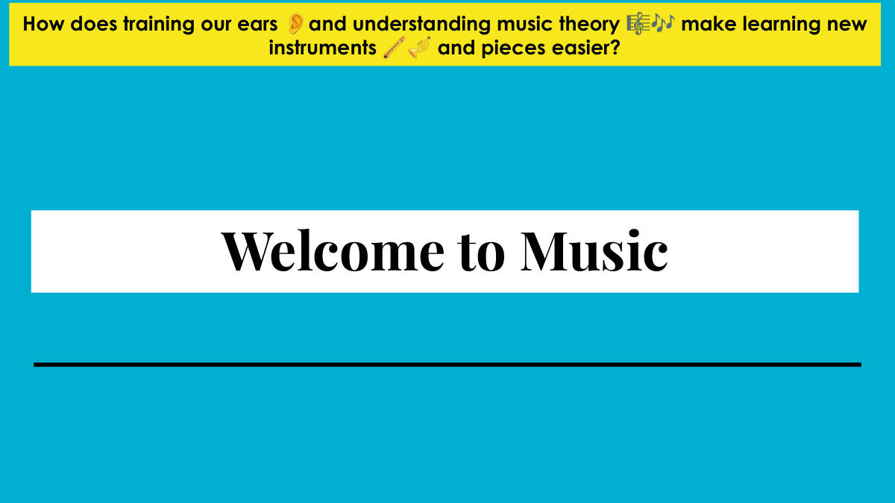
이 수업 전체를 이끄는 질문은 '귀 훈련과 음악 이론이 새 악기·새 곡 배우기를 어떻게 쉽게 만드는가'이다
음악을 배우는 두 축으로 귀 훈련과 음악 이론이 제시된다
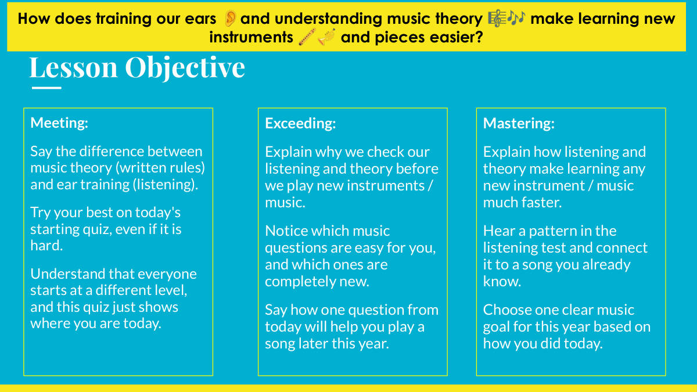
음악 이론은 글로 쓰인 규칙이고, 귀 훈련은 듣기다 — 이 둘의 차이가 이 수업의 핵심이다.
목표는 도달·초과 달성·숙달 세 단계로 나뉘며, 오늘 퀴즈는 점수를 매기는 것이 아니라 지금 내 수준을 확인하는 것이다.
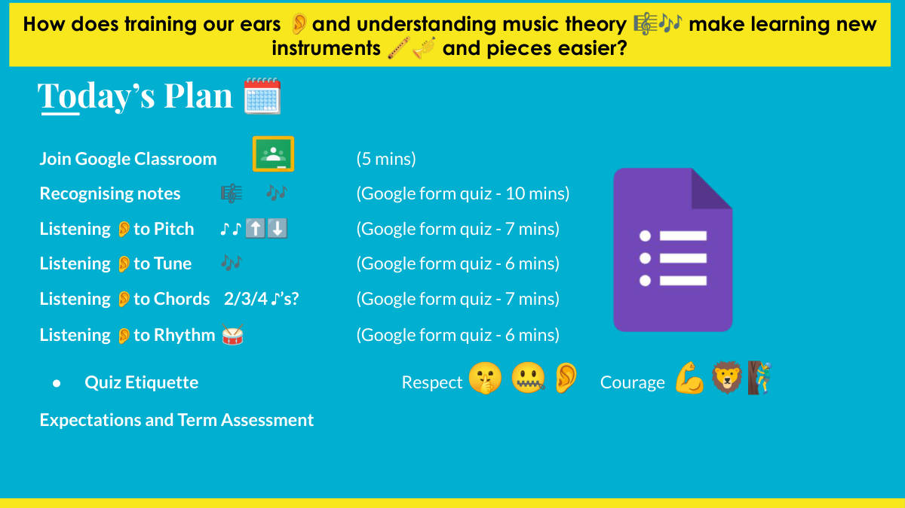
오늘 수업은 구글 폼 퀴즈 5개로 진행된다 — 음표 읽기(10분), 음높이(7분), 가락(6분), 화음(7분), 리듬(6분) 순이다.
퀴즈를 볼 때 지켜야 할 태도는 조용히 듣는 존중과, 틀려도 도전하는 용기다.
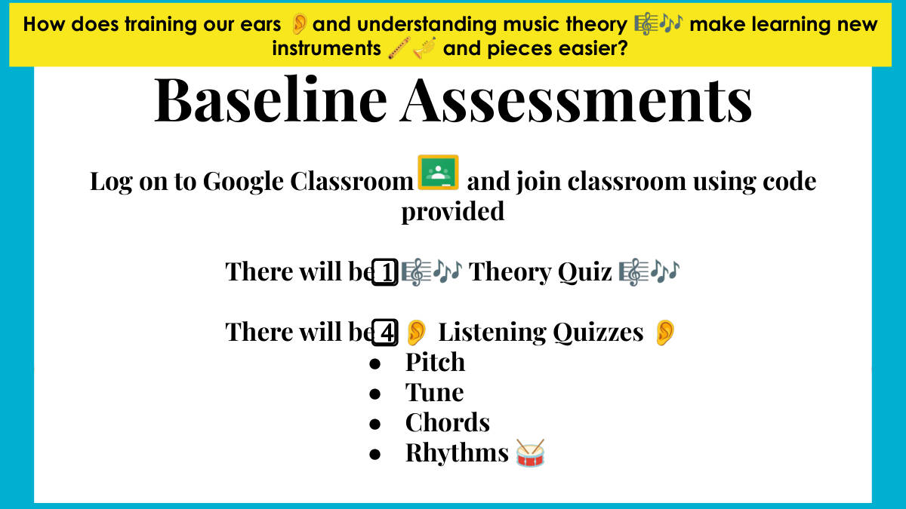
평가는 이론 퀴즈 1개와 듣기 퀴즈 4개, 모두 5개로 이루어진다.
듣기 퀴즈 4개의 주제는 음높이·가락·화음·리듬이다.
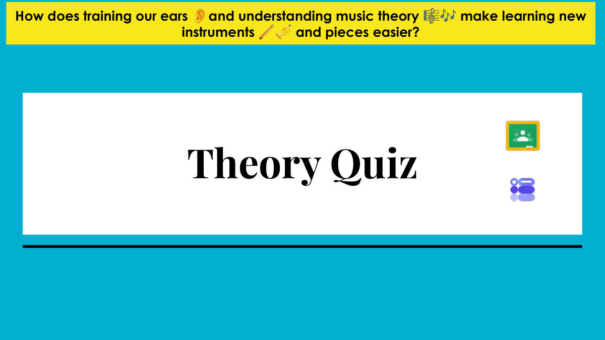
이 쪽은 이론 퀴즈의 여는 질문 한 개다
묻는 것은 청음 훈련과 음악 이론이 새 악기·새 곡 배우기를 쉽게 해 주는 방식이다
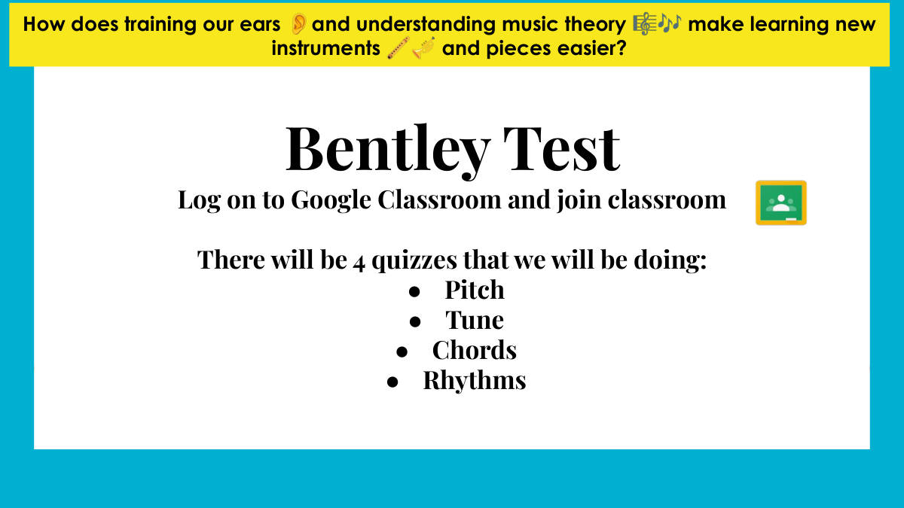
구글 클래스룸에 로그인해 클래스룸에 참여해야 테스트를 볼 수 있다
벤틀리 테스트는 음높이·가락·화음·리듬 네 가지 퀴즈로 이루어진다
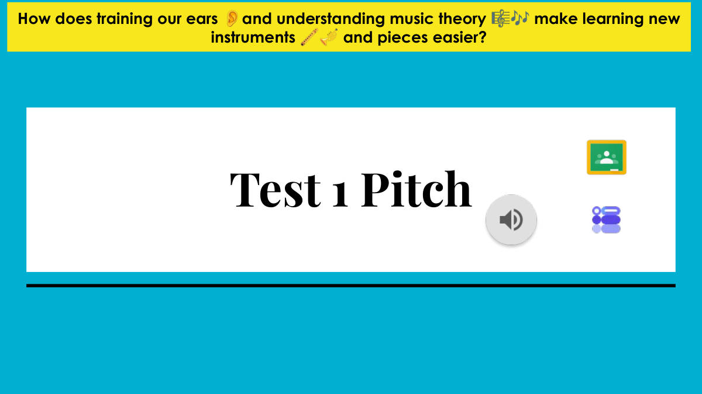
첫 번째 테스트 주제는 음높이(Pitch)다.
귀 훈련과 음악 이론이 새 악기·새 곡을 배우는 데 어떤 도움이 되는지 생각해 보는 질문이다.
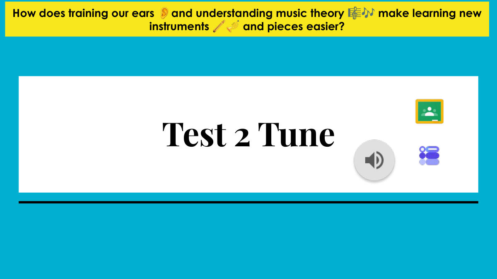
두 번째 테스트는 'Tune(음 맞추기)'이며, 귀 훈련과 음악 이론을 다룬다.
귀 훈련과 음악 이론이 새 악기·새 곡 익히는 것을 왜 쉽게 해 주는지를 묻는 쪽이다.
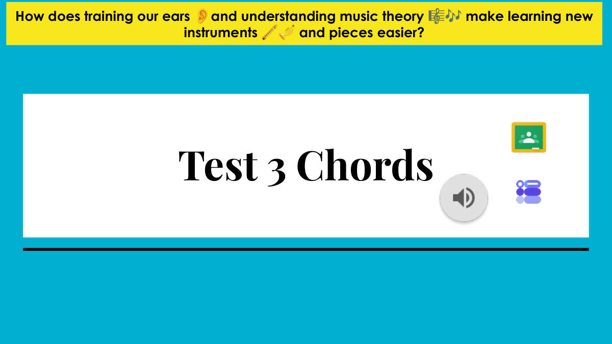
세 번째 테스트의 주제는 화음(Chords)이다.
귀 훈련과 음악 이론이 새 악기·새 곡 학습을 쉽게 만드는 이유를 생각해 보는 질문이다.
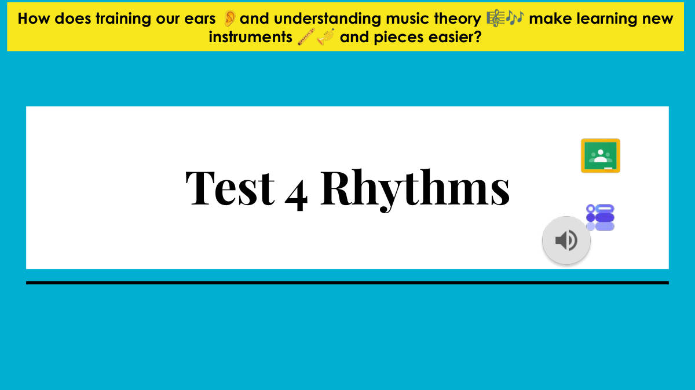
네 번째 테스트 주제는 리듬이다.
이 쪽은 귀 훈련과 음악 이론이 새 악기·새 곡 학습을 쉽게 해 주는 이유를 생각해 보게 하는 질문이다.
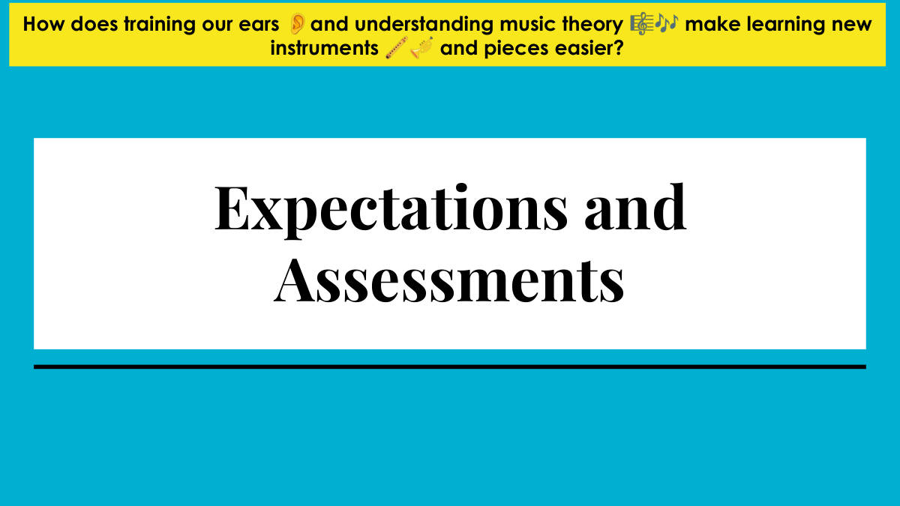
이 수업의 기대치와 평가 방식을 다루는 쪽이다.
청음 훈련과 음악 이론 이해가 새 악기·새 곡을 배우는 데 어떤 도움이 되는지 생각해 보게 하는 질문이 나온다.
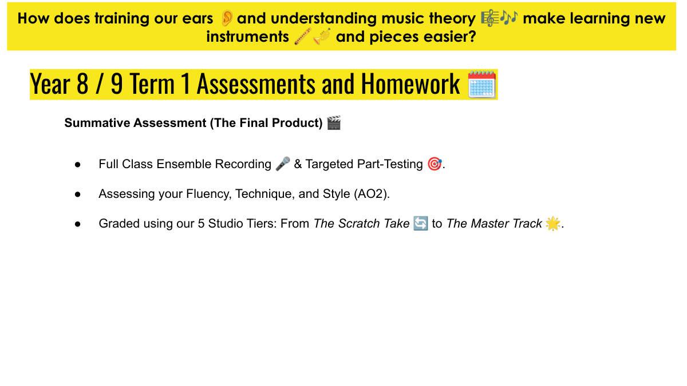
평가는 합주 녹음과 개별 파트 테스트 두 가지로 이뤄지고, 보는 항목은 유창성·테크닉·스타일(AO2)이다.
점수는 5단계 스튜디오 등급으로 나오며 The Scratch Take가 아래, The Master Track이 위다.
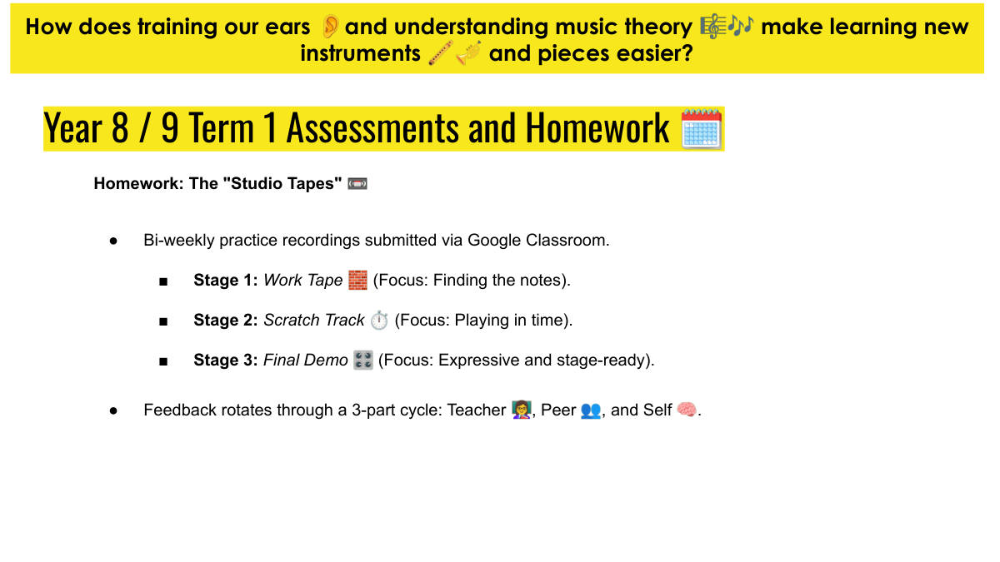
숙제 녹음은 격주로 구글 클래스룸에 내며, 워크 테이프(음 찾기) → 스크래치 트랙(박자) → 파이널 데모(표현·무대 준비) 3단계로 올라간다.
피드백은 선생님·친구·자기 자신 세 가지가 돌아가며 이루어진다.
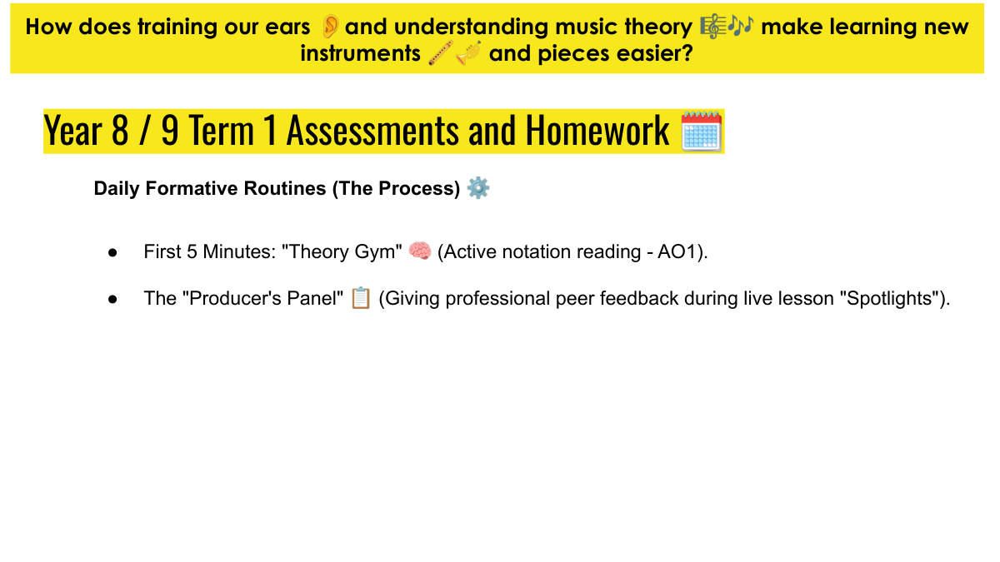
수업마다 반복되는 두 가지 루틴이 있다 — 처음 5분 '이론 체육관'에서 악보를 능동적으로 읽고(AO1), '프로듀서 패널'에서 실시간 수업 중 친구 연주에 전문가다운 피드백을 준다.
이 쪽의 핵심 질문은 '귀 훈련과 음악 이론 이해가 새 악기와 새 곡 배우기를 어떻게 더 쉽게 만드는가'다.
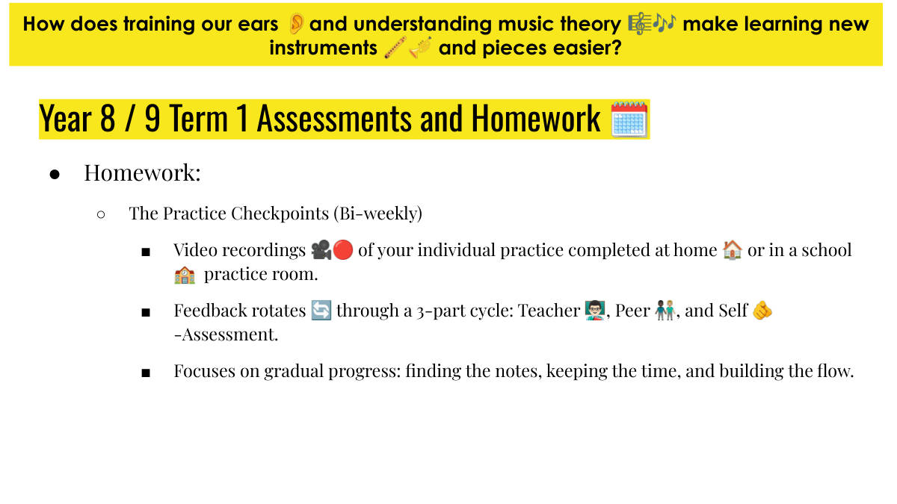
숙제는 2주마다 내는 개인 연습 영상이고, 피드백은 선생님·친구·자기 평가 3가지가 돌아가며 진행된다
평가 기준은 잘 치는 것보다 음 찾기·박자 지키기·흐름 만들기의 점진적 발전이다
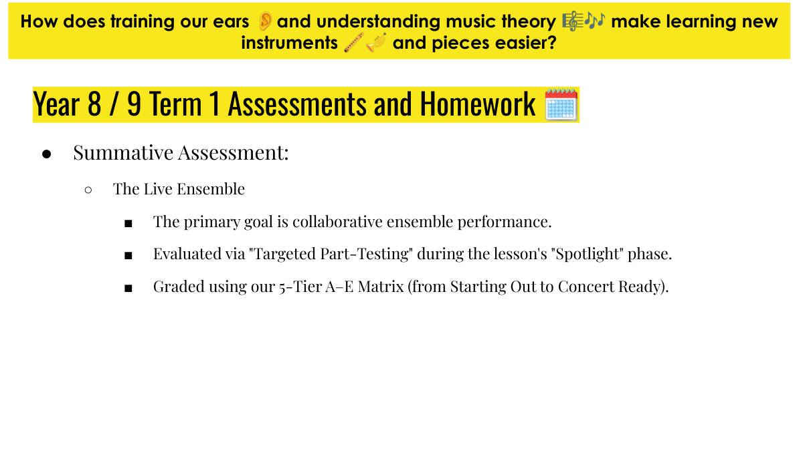
평가는 혼자 연주가 아니라 다 같이 하는 앙상블 공연이 중심이고, 수업 중 스포트라이트 단계에서 자기 파트를 따로 테스트받는다.
성적은 A~E 5단계로, 맨 아래 'Starting Out'에서 맨 위 'Concert Ready'까지 나뉜다.
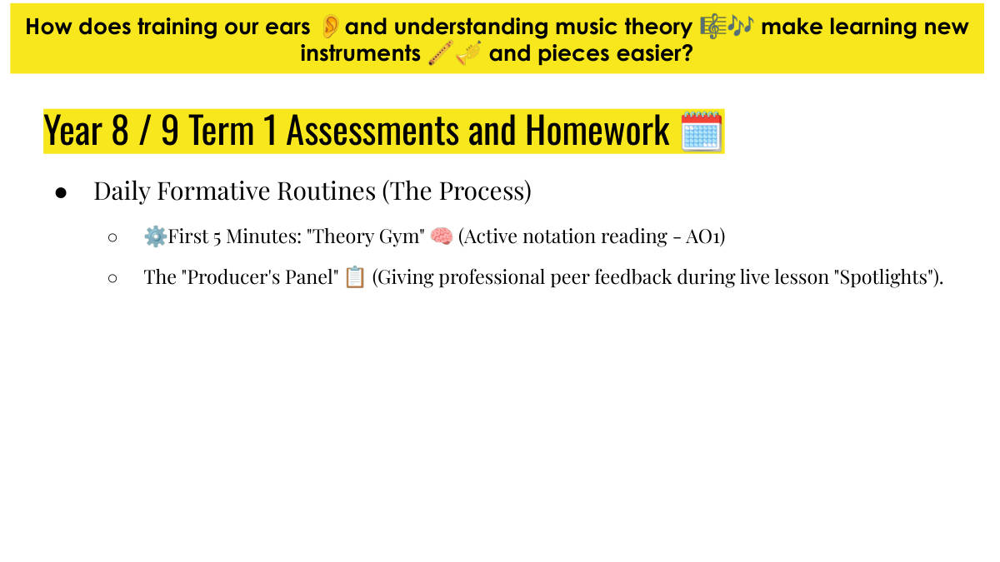
수업마다 첫 5분은 '이론 체육관'으로 악보 읽기를 연습하고, 수업 중 '스포트라이트' 순서에서는 '프로듀서 패널'이 되어 친구 연주에 피드백을 준다.
악보 읽기 활동은 평가 항목 AO1에 해당하며, 이 쪽의 핵심 질문은 '귀 훈련과 음악 이론이 새 악기와 새 곡 배우기를 왜 쉽게 만드는가'이다.
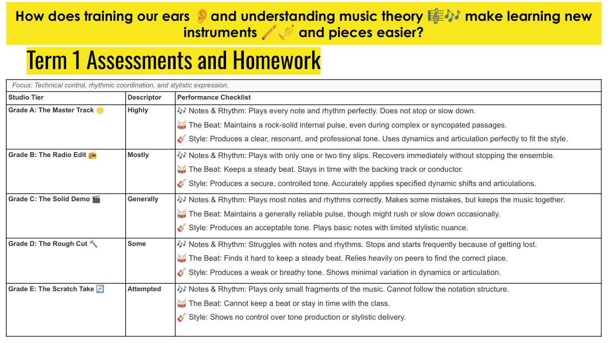
연주 평가는 세 가지로 나뉜다 — 음과 리듬(정확도), 박(박자 유지), 양식(음색과 표현). 등급은 A(마스터 트랙)부터 E(스크래치 테이크)까지다.
A와 B를 가르는 것은 실수의 크기가 아니라 회복이다. B는 작은 실수 한두 개가 있어도 멈추지 않고 바로 회복하며, C부터는 박이 흔들리거나 표현이 빠진다.
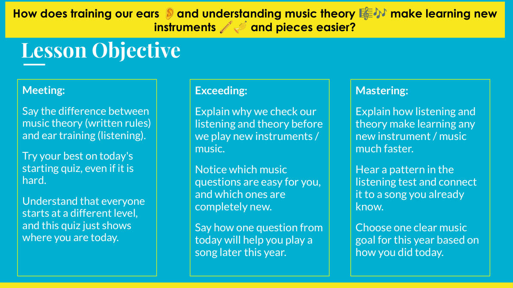
목표가 충족·우수·최우수 세 단계로 나뉘며, 위로 갈수록 '차이를 말한다 → 이유를 설명한다 → 아는 곡·올해 목표와 연결한다'로 요구가 깊어진다
이 쪽의 핵심 대비는 음악 이론(글로 적힌 규칙)과 청음 훈련(듣기)이고, 시작 퀴즈는 점수가 아니라 오늘의 내 위치를 확인하는 도구다
이 자료는 SJIIS 음악과(Music Department)에서 올린 연습실 예약(Practice Room Booking) 링크다. 단원 이름도 'Practice Room Booking Link'로, 수업 내용이 아니라 예약을 하러 들어가는 통로다. 그래서 읽고 외우는 자료가 아니라, 필요할 때 눌러서 쓰는 자료다.
자료 유형이 Material(자료)로 되어 있고, 게시일은 8월 26일(Posted Aug 26)이다. 과제(assignment)가 아니므로 제출할 것도, 마감일도 붙어 있지 않다.
화면 오른쪽의 more_vert(점 세 개)를 누르면 More options(더 보기)가 나온다. 링크를 새 창으로 열거나 복사하는 등의 기능이 여기에 들어 있다.